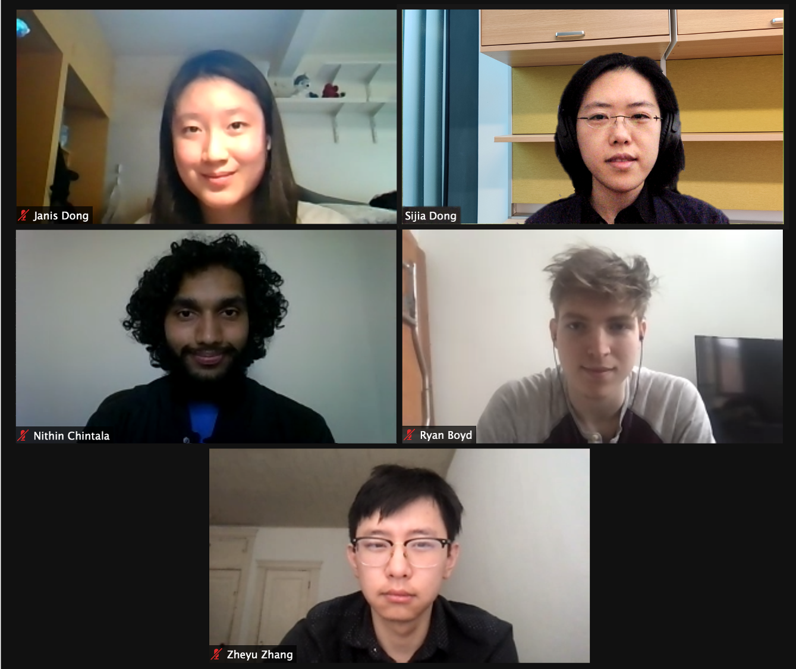

|
Current Members

Second Group Meeting, March 2021
Postdoctoral Scholars
Openings
PhD Students
Openings
Master's Students
Zheyu Zhang
Undergraduate Students
Janis Dong
Major in Biochemistry, Minor in Business
Eager to explore the mystery of chemistry and science to contribute more to the community.
Fun Fact: I swam competitively for 8 years.
Nithin Chintala
Major in Biochemistry, Minor in Computer Science
I love the intersection of computer science and biochemistry and specifically the ability to make models to predict protein / drug interactions.
Fun fact: I have a black belt in Taekwondo!
Ryan Boyd
Major in Physics, Minors in Philosophy and Mathematics
I am interested in all kinds of scientific research, especially astronomy, astrophysics, and computational physics.
Hobbies: I love to play sports, especially basketball, as well as read and play videogames in my free time.
|